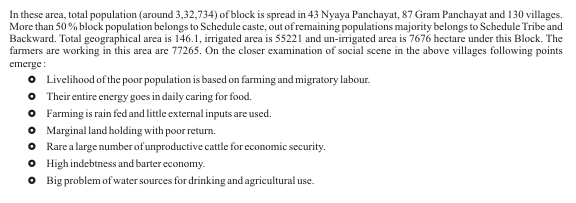
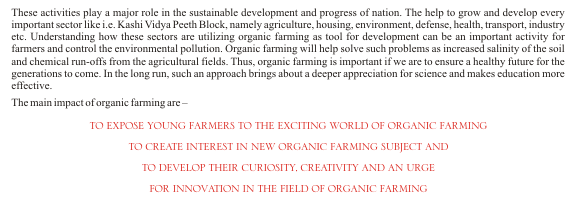
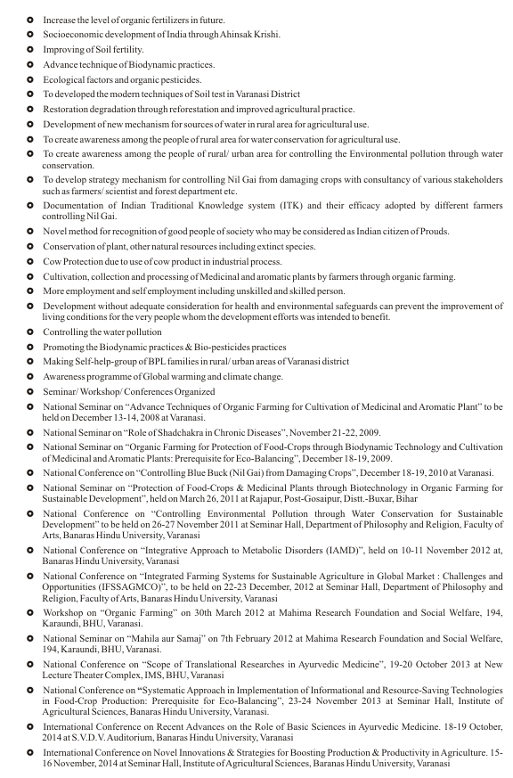
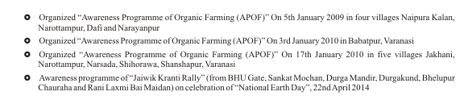

ABOUT THE FOUNDATIONMahima Research Foundation and Social Welfare (Reg. # 643/2007-08 Under society Act of India 1860) aiming the problems of the society like losing food product prevalence and its nature, poverty, un-employment, hunger, price rice, happing of suicide, corruption, decreasing in nationality, patriotism and morality, environmental challenged and pollution, migration from rural area, water problems in agriculture our foundation started taking many kinds of activity resulting in peace and prosperity. One of the major concerns in today rural areas of Narottampur, Narshada, Shihorava & Jakhani of Kashi Vidyapith Block of Varanasi District is the pollution and contamination of soil. The foundation running the “Awareness Programme of Organic Farming” in these areas, resultant now, better food secure, crop production, improving the soil fertility, increase the economical level. LOCATION VISIONYes, India is one of the leading developing countries making economic progress through industrial and agricultural development programmes. Agriculture is the major source of livelihood, particularly in rural areas, where about 65-70% of the people have been living. However, the present level of agricultural production has not reached the optimal stage because of series of hurdles. India’s traditional organic agriculture and how last 70 years have seen rapid use of fertilizers and pesticides in the name of the Green Revolution. This period has resulted in a near irreversible loss of livelihood to millions of farming households and large scale misuse of chemical inputs. Green revolution, affirmed that while biotechnology had a vital role to play in helping India and the world to achieve food security. In that context, it is felt that only an autonomous, professionally-led national biotechnology regulatory authority would “inspire public confidence” in genetically modified organisms. We need is an Evergreen Revolution, but with ecologically sustainable techniques like organic farming, horticulture and green agriculture. With expected climatic changes and sea-level rises as a result of global warming, biotechnology could have a crucial role to play in ensuring bio-diversity and making crops more resistant to external stresses. A majority of the crops suffer due to nutritional deficiency. In the areas of intensive agriculture such as Punjab, Haryana, Tarai region of Uttar Pradesh and Bihar, the sugarcane belts in the rest of the country, excessive doses of imbalanced fertilizer application has been a problem of serious concern. These areas also suffer from excessive use of water for irrigation, when soils turn alkaline or saline and the fertilizers applied to the soils are not available for the crops. Mahima Research Foundation and Social Welfare have adopted organic farming as a way of farming for these communities out of necessity. The training imparted created an environment for undertaking organic farming vigoursly. Consequently, 5000 families entirely switched over to organic cultivation. These are the families who are fully convinced with the practices and working as motivators of the Mahima Research Foundation and Social Welfare. This is very encouraging trend in the Narottampur, Narshada, Shihorava & Jakhani of Kashi Vidyapith Block of Varanasi District. The chances of its spread are very high. However, there is no room for complacency, the trainings of organic farming and awareness programmes have to be undertaken continuously till the time that entire villages starts practices it. MISSION PLANS FOR THE FUTURE HEALTH CAMP ORGANIZEDORGANIZED AWARENESS PROGRAMME |
|